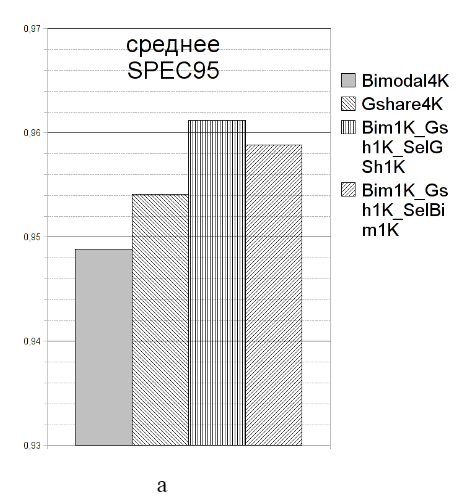
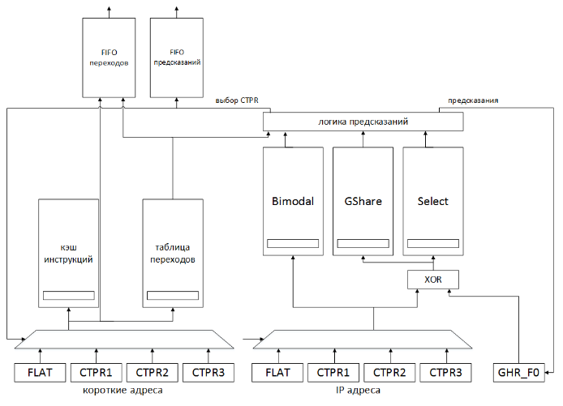
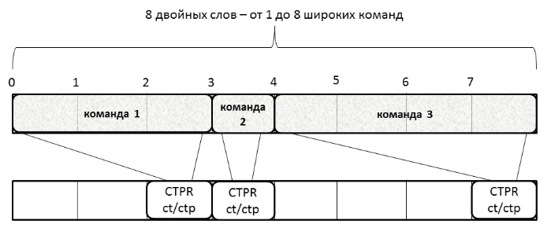
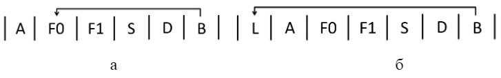

М.Р. Абдуразаков, В.С. Волин, М.В. Лаптев / M. Abdurazakov, V. Volin, M. Laptev
АО «МЦСТ», ПАО «ИНЭУМ им. И.С. Брука»
Примечание: в данной статье рассматривается создание весьма специфического предсказателя переходов, который не столько увеличивает производительность процессора, сколько уменьшает количество необходимых процессорных блоков. Авторы предлагают рассмотреть возможность отказаться от большого конвейера, который (в процессоре 4C) хранит 4 широких команды, в пользу короткого конвейера на 1 широкую команду, чтобы исключить подкачку 4 широких команд за такт вместо одной. Вместе с этим авторы предлагают убрать коммутатор, который выбирал для выполнения подкаченные команды, так как при одной подкаченной команде проблема выбора не стоит. Упростив таким образом системы конвейера и подкачки, авторы рассматривают добавление различных конструкций предсказателя перехода.
ОПЫТ РЕАЛИЗАЦИИ ПРЕДСКАЗАНИЯ ПЕРЕХОДОВ В МИКРОПРОЦЕССОРЕ С АРХИТЕКТУРОЙ «ЭЛЬБРУС»
BRANCH PREDICTOR DESIGN FOR «ELBRUS» MICROPROCESSOR
Описан опыт реализации устройства предсказания переходов в микропроцессоре с архитектурой «Эльбрус», приведены полученные результаты, выдвинуты предложения по их использованию.
In this article, we share our experience of designing branch predictor for «Elbrus» miscroprocessor and its performance results, propose its usefull application.
Введение
В процессорном ядре архитектуры «Эльбрус» подкачка кода при ветвлении организована в два этапа. На первом этапе выполняется команда подготовки перехода, которая формирует адрес передачи управления, обращается с ним в буфер команд, подкачивает необходимый код и дешифрирует подкачанную команду до фазы B конвейера на дополнительном регистре команды. На втором этапе собственно команда передачи управления просто передает управление на этот дополнительный регистр (дальнейшая подкачка команд происходит через основной регистр команды). По этому принципу одновременно могут быть подготовлены три передачи управления в трех дополнительных регистрах (Control Transfer Preparation Registers, далее – CTPR).
Эта техника, будучи весьма эффективной в смысле производительности, тем не менее, является затратной с точки зрения энергопотребления. При любой передаче управления заметный объем работы, приходящийся на данную ветвь, выполняется независимо от того, будет ли на нее реально передано управление. Так как предполагается непрерывная работа ядра после исполнения команды собственно перехода, на дополнительном регистре команды должен быть запас кода, которого хватит на время заполнения основного конвейера (в современных ядрах с архитектурой «Эльбрус» – четыре команды). В совокупности это приводит к тому, что, хотя устройство управления процессорного ядра дешифрирует и отдает на исполнение только одну команду за такт, буфер команд подкачивает четыре команды за такт. Первые три фазы конвейера учетверены. Учитывая большую вычислительную мощность процессорного ядра и, соответственно, большую длину его команды, затраты на такую реализацию передачи управления оказываются очень значительными.
При разработке микропроцессора «Эльбрус-1С+» был принят ряд решений, направленных на уменьшение энергопотребления процессора: блокировка конвейера вместо повторения команд, изменение алгоритма обращения к кэш-памяти 2-го уровня и других. Наряду с этим, основываясь на существующем опыте проектирования процессорных ядер, использующих предсказание перехода, авторы статьи поставили цель без изменения системы команд реализовать передачу управления с использованием техники предсказания перехода, которая должна обеспечить сокращение количества команд, подкачиваемых из кэш-памяти команд, до одной в такт, существенное сокращение количества оборудования, используемого для организации дополнительных регистров CTPR и исключение из схемы коммутатора, выбирающего одну команду из четырех на фазе B конвейера.
Две основные задачи, поставленные и решенные при реализации предсказания переходов в микропроцессоре с архитектурой «Эльбрус»:
1) выбор алгоритма собственно предсказания перехода;
2) реализация этого алгоритма в рамках существующей архитектуры.
1. Выбор алгоритма предсказания перехода
Моделирование различных вариантов предсказателя выполнялось на симуляторе микропроцессора «Эльбрус-4С». В состав симулятора был включен модуль, собирающий статистику предсказаний переходов во время выполнения тестов. С целью моделирования устройства предсказания передач управления были выбраны:
Исходно моделировались простейшие варианты предсказателей различного размера, достаточно подробно охарактеризованные в [1]. Бимодальные предсказатели (Bimodal) с количеством счетчиков меньше 1K продемонстрировали резкое ухудшение параметров эффективности, поэтому дальнейшие измерения проводились для предсказателей с количеством счетчиков 1К или бóльшим. Эксперименты с использованием двух- и трехбитовых счетчиков показали, что последние имеют лишь незначительное превосходство и их использование в бимодальном предсказателе нецелесообразно. Сопоставление бимодальной схемы и предсказателя с локальной историей привело к выводу о том, что при малых размерах локального предсказателя (<4K) его эффективность ниже, чем у сравнимого бимодального. Анализ результатов тестирования бимодальных и Gshare-предсказателей выявил, что в некоторых типах тестов из набора SPEC95 бимодальный предсказатель значительно превосходит Gshare, в то же время на других тестах результаты противоположны.
Проведенное моделирование показало ожидаемую зависимость эффективности от размера предсказателей. Также было подтверждено, что в разных ситуациях наиболее эффективными являются предсказатели различных типов, что позволяет их комбинировать и выбирать предсказания от разных частей. В дальнейшем в моделировании использовался селективный предсказатель, состоящий из двух простых частей – бимодального и Gshare, оказавшихся наиболее эффективными на тестах различного типа. Моделирование показало, что селективный предсказатель с адресацией в массив селектора получаемой хэш-функцией (XOR) от IP команды и глобальной истории (Bim-Gsh-SelGsh) эффективнее, чем аналогичный, адресуемый только по IP (Bim-Gsh-SelBim). Размеры массивов, бóльшие, чем 1K счетчиков, не показали значительного увеличения процента предсказанных переходов. В то же время тенденция снижения эффективности предсказателя с уменьшением его размера подсказывает, что размеры счетчиков, меньшие 1K, не обеспечат достаточной производительности для системы.
На рисунке 1 приведены обобщенные результаты моделирования на пакетах Spec95
(а) и ПОЛЬЗОВАТЕЛЬ (б) для самых эффективных вариантов предсказателя.

Рисунок 1. Среднее геометрическое процента успешных предсказаний направления
перехода при исполнении задач для основных вариантов организации устройства
предсказания передачи управления: а) пакета Spec95; б) пакета ПОЛЬЗОВАТЕЛЬ
Выбранная по результатам моделирования схема представляет собой селективный
предсказатель, состоящий из трех массивов двухбитных счетчиков. Бимодальный массив
адресуется по IP команды; Gshare- и селективный предсказатель адресуются по результату
сложения адреса и глобальной истории переходов по модулю 2. Размеры каждого
накопителя составляют 1K двухбитных счетчиков.
2. Организация устройства предсказания переходов
Одним из основных ограничений, учитываемых при разработке устройства, была
неизменность существующей системы команд. В то же время двухэтапная организация
передачи управления в архитектуре Эльбрус (подготовка перехода и собственно переход)
наряду с ограничениями предоставила и новую возможность, основанную на том, что
адрес перехода заранее известен, что позволяет не предсказывать его на ходу. Вследствие
этого обычно присутствующий в устройстве предсказания переходов (и занимающий его
немалую часть) Branch Target Buffer оказывается ненужным. Основное изменение, которое
было сделано при имплантации устройства предсказания в микропроцессор, это
прекращение действия команды подготовки переходов после проверки памяти тегов кэш-
памяти команд; дальнейшая деятельность по подкачке кода привязана к команде
собственно передачи управления и выполняется с учетом результатов предсказания (рис. 2).

Рисунок 2. Сравнение алгоритма подкачки кода без использования перехода (сверху) и с
использованием предсказания перехода (снизу)
В выбранной реализации устройство предсказания переходов включает только
накопитель, хранящий счетчики предсказания и некоторые служебные флаги, и
минимальную управляющую логику. Вместе с тем предложенная реализация позволяет
убрать три четверти оборудования на фазах S, D и B конвейера, в которых команды,
поступившие из кэш-памяти, декодируются, преобразуются в полный формат, пригодный
для исполнения, и распределяются по исполнительным устройствам. За счет этого
существенно упрощается доступ к кэш-памяти команд, т.к. подкачивается один
программный поток вместо четырех – основного и трех дополнительных, что позволяет
уменьшить площадь памяти инструкций при том же объеме за счет изменения ее
физической организации. В совокупности все это и обеспечивает достижение
поставленных задач – сокращение площади кристалла и снижение энергопотребления.
Интересно отметить, что отсутствие неупорядоченного исполнения команд и раннее
вычисление условия перехода в микропроцессорах с архитектурой «Эльбрус» позволяют
упростить реализацию условной отмены команд – вся деятельность при ошибочном
предсказании ограничена устройством управления и кэш-памятью команд, а в
исполнительные устройства попадают команды только из правильной ветви перехода.
Таким образом, архитектура Эльбрус оказывается вообще очень привлекательной для
использования техники предсказания переходов.
Общая структура устройства предсказания переходов приведена на рисунке 3.

Рисунок 3. Общая структура устройства предсказания переходов
Архитектура «Эльбрус» предполагает наличие в программном коде команд разной
длины, поэтому выдача предсказания для подкачки кода необходима до выполнения его
декодирования и определения размеров и типа команд. В архитектуре «Эльбрус» введены
два типа операций перехода – подготовленные и непосредственные, причем количество
непосредственных переходов в коде очень невелико, для них весьма редко реализуется
условие перехода, т.е. в основном они обречены на промах, в данном случае неизвестен
заранее адрес перехода. С учетом этих факторов было принято решение при
проектировании устройства не рассматривать операции непосредственного перехода.
В операциях подготовки переходов задействованы три CTPR. Каждому из них
соответствует отдельная непрямая ветвь исполнения кода. Поэтому предсказатель
переходов помимо информации о разрешении перехода (переход/провал, taken/not taken)
сохраняет номер соответствующего CTPR для указания, на какую из трех ветвей надо
передать управление. Предсказания необходимо выдавать на этапе подкачки кода (фаза F1
конвейера), для чего в состав устройства включена таблица, где для каждого двойного
слова подкачиваемого из накопителя кода хранится информация о наличии операции
перехода, задаваемого номером CTPR. Такая информация содержится в локации,
соответствующей последнему двойному слову широкой команды (рисунок 4). Это
упрощает определение границы, начиная с которой необходимо подкачивать другую ветвь
исполнения. Таблица заполняется при первом исполнении кода, когда на фазе B конвейера
появляется вся необходимая информация. При последующих подкачках этого кода
одновременно из таблицы считывается информация о переходах и выдается предсказание,
в соответствии с которым после операции перехода подкачивается выбранная ветвь.

Рисунок 4. Соответствие кода и информации в таблице предсказаний
За такт из накопителя подкачивается 8 двойных слов, содержащих от 1 до 8 команд,
выровненных до двойного слова. Для каждого двойного слова из накопителя в таблице
выделены три бита, два из которых задают номер CTPR (CTPR), а один – признак
подготовки или выполнения перехода (ct/ctp). Эти три бита выставляются в поле,
соответствующем последнему двойному слову команды. При каждом чтении 8 двойных
слов памяти команд из таблицы по тому же адресу считывается информация о переходах.
Если в ней обозначен признак выполнения перехода, то формируется управляющий
сигнал, по которому следующим адресом для обращения в накопитель будет адрес,
соответствующий номеру CTPR этого перехода, этот адрес записывается в хвост очереди
FIFO переходов.
В микропроцессорах «Эльбрус» условие выполнения перехода анализируется и
используется на фазе B конвейера. В предложенной реализации при достижении командой
фазы B появляется информация о том, является ли команда переходом, номер CTPR,
соответствующий команде (строго ноль для всех команд, не являющихся переходом или
подготовкой), сигнал misprediction, сообщающий о том, что переход был предсказан
неверно, IP команды и её длина. По указателю вершины FIFO-очереди переходов читается
адрес первого из 8 элементов таблицы. Для расчета адреса элемента, соответствующего
последнему двойному слову команды, к адресу, взятому из очереди, прибавляется длина
команды. По рассчитанному адресу записываются три бита информации о переходе. В
случае если с уровня B приходит сигнал Misprediction, очередь FIFO и регистр-накопитель
обнуляются. При перезаписи 8 двойных слов в накопителе по тому же адресу обнуляются
8 полей в таблице.
Выбранная схема предсказателя предполагает наличие трех массивов двухбитовых
счетчиков. Бимодальный массив адресуется по IP команды; Gshare- и Selector-массивы
адресуются по результату сложения адреса и глобальной истории переходов по модулю 2.
При чтении 8 двойных слов из накопителя наряду с чтением из таблицы выполняется
чтение предсказаний. По значению в селекторном массиве выбирается предсказание из
бимодального или Gshare массивов для каждого из 8 двойных слов. Прочитанные значения
счетчиков записываются в FIFO-очередь предсказаний, подобную очереди адресов для
таблицы переходов.
Для обновления значений массивов предсказателя с уровня B поступают те же
сигналы, которые считываются из памяти для таблицы предсказаний. По длине команды
выбираются значения счетчиков для трех предсказателей из вершины очереди. Они
изменяются в соответствии с результатом перехода и записываются по адресу, равному
сумме IP и длины команды.
Глобальная история переходов хранится в двух регистрах – GHR_B и GHR_F0. Для
выдачи предсказания используется регистр GHR_F0, общий для всех потенциальных
предсказаний, формируемых в этом такте (потенциально в такте могут быть прочитаны 8
команд, причем все они окажутся переходами – возможная, но статистически незначимая
ситуация). После выдачи итогового предсказания в GHR_F0 со сдвигом записываются
предсказания для команд, являющихся переходами. При исполнении перехода на уровне B
результат исполнения со сдвигом записывается в регистр GHR_B. В случае неверного
предсказания значение GHR_B переписывается в GHR_F0.
В момент исполнения команды перехода (фаза B конвейера) появляется реальная
информация о том, исполнится переход или нет. Этот результат сравнивается с
предсказанным. Если переход был предсказан неверно – выставляется сигнал о неверном
предсказании (Misprdection) и выполняется процедура отката. При откате обнуляются
значения очереди команд, очереди коротких адресов, сбрасываются флаги.
В случаях, когда исполнение перехода предсказано не было, промах означает, что не
готов короткий адрес соответствующего CTPR. Если короткий адрес на момент
обнаружения промаха уже готов, можно выполнять чтение восьмерки в следующем после
обнаружения промаха такте (рисунок 5а). Если переход был предсказан, но произошел
промах, необходимо рассчитать короткие адреса для основной ветви. С этой целью
понадобятся два такта, поскольку расчет будет произведен, начиная со стадии L,
предшествующей уровню A (рисунок 5б).

Рисунок 5. Временнáя диаграмма передачи управления: а) при промахе и готовом адресе
перехода; б) при промахе и неготовом адресе перехода
3. Результаты разработки и выводы
На завершающем этапе проектирования устройство было исследовано в составе
прототипа микропроцессора Эльбрус-4С, что позволило получить данные на реальных
задачах. Относительные результаты для пакета Spec2000 приведены в таблице 1: в левой
колонке – название теста, в правой – относительное изменение времени исполнения по
отношению к базовому варианту микропроцессора.
Таблица 1. Относительные результаты исполнения пакета Spec2000 без (e2s) и с (e2s_bp) с
использованием устройства предсказания переходов
|
test |
e2s_bp/e2s |
|
164.gzip |
1.0406 |
|
175.vpr |
1.0246 |
|
176.gcc |
1.0683 |
|
181.mcf |
0.9952 |
|
186.crafty |
1.0700 |
|
197.parser |
1.0315 |
|
253.perlbmk |
1.0243 |
|
254.gap |
1.0117 |
|
255.vortex |
1.0288 |
|
256.bzip2 |
1.0557 |
|
300.twolf |
1.0365 |
|
168.wupwise |
1.0025 |
|
171.swim |
0.9770 |
|
172.mgrid |
1.0042 |
|
173.applu |
1.0006 |
|
177.mesa |
1.0162 |
|
179.art |
1.0009 |
|
183.equake |
1.0415 |
|
188.ammp |
1.0048 |
|
200.sixtrack |
1.0205 |
|
Avg total |
1.0228 |
Данные показывают в среднем небольшое уменьшение производительности
микропроцессора (2%), которое, по мнению авторов, является приемлемой платой за
существенное сокращение его площади и энергопотребления.
Следует отметить, что сжатые сроки разработки и существенное преобразование
процессорного ядра при реализации дополнительных функций, определенных в очередной
версии системы команд «Эльбрус», не позволили ввести спроектированное устройство
предсказания переходов в окончательный вариант микропроцессора «Эльбрус-1С+». Тем
не менее, приведенные результаты дают веские основания для применения описанного
решения в перспективных разработках. В этом контексте следует особо отметить, что
количество дополнительных регистров передачи управления (три в существующих
версиях системы команд) является одним из наиболее существенных факторов,
ограничивающих извлекаемый из программы параллелизм. Столь малое количество
регистров определяется, в частности, большим объемом оборудования, занимаемым
каждым из них. Предложенная реализация, позволяющая за счет существенного
сокращения оборудования увеличить количество этих регистров, например до семи, не
только компенсирует некоторые потери, но и позволит повысить показатели
производительности микропроцессора.
ЛИТЕРАТУРА
1. Scott McFarling, Combining Branch Predictors. – Palo Alto, CA, 1993.
ИНФОРМАЦИЯ ОБ АВТОРАХ
Абдуразаков Марат Рустамович, аспирант ПАО «Институт электронных управляющих машин им. И.С. Брука», инженер, 119334, Москва, ул. Вавилова, д. 24, (499)135-50-49, abdur_m@mcst.ru
Волин Владимир Сергеевич, начальник отдела, АО «МЦСТ», ПАО «Институт электронных управляющих машин им. И.С. Брука», Москва, ул. Вавилова, д. 24, (499)135-43-41, vv@mcst.ru
Лаптев Михаил Викторович, ведущий инженер-конструктор, АО «МЦСТ», ПАО«Институт электронных управляющих машин им. И.С. Брука», Москва, ул. Вавилова, д. 24, (499)135-42-59, laptev_m@mcst.ru
Вопросы радиоэлектроники. — 2016. — № 3. — С. 36—41.